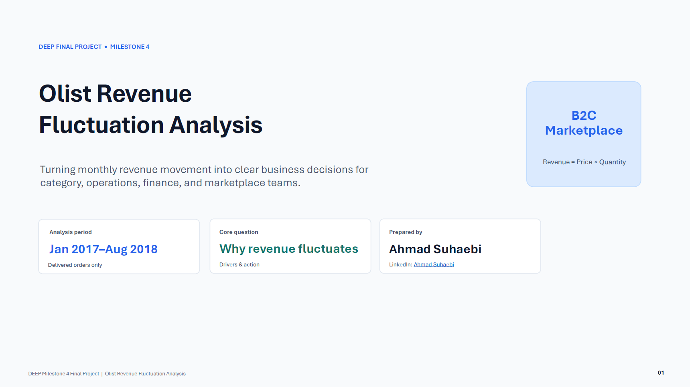
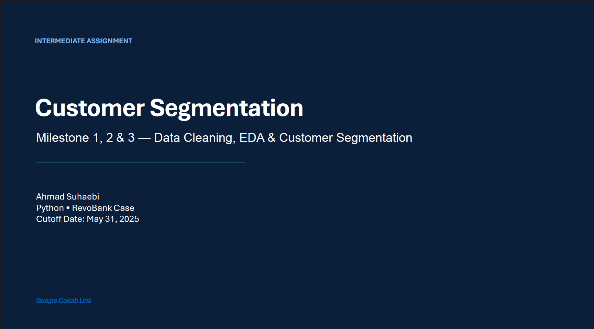

Py
Python
Data cleaning, EDA, visualization, segmentation, and summary analysis.
Data Analyst Portfolio
A data-oriented individual with practical experience in technical administration, inventory monitoring, operational data analysis, and data analytics projects using Python, SQL, Tableau, and spreadsheets.
Python • SQL • Tableau
About
I have experience analyzing monthly machine spare part usage, downtime trends, cost estimates, and procurement needs to support cost control and operational performance.
I also completed several data analytics projects involving sales performance, customer behavior, healthcare admissions, and business KPI analysis.
Break down business questions into clear analytical steps.
Translate findings into simple insights and recommendations.
Skills
Data cleaning, EDA, visualization, segmentation, and summary analysis.
Joins, aggregation, KPI analysis, and business data exploration.
Interactive dashboards development, calculated fields, data visualization, and data storytelling.
Pivot tables, charts, cleaning, A/B testing, and final recommendations.
Executive summaries, insight narratives, and stakeholder-ready slides.
Spare part usage, inventory monitoring, downtime, procurement, and cost estimates.
Projects

Python • SQL • Tableau • Business Analysis
Analysed 100,000+ e-commerce transactions to identify key revenue drivers and develop actionable business growth recommendations.

Python • RFM Analysis • K-Means Clustering
Processed credit card and customer datasets using machine learning to uncover distinct risk profiles and spending patterns.
Experience
May 2015 – Aug 2025
PT. Suri Tani Pemuka (Japfa Group)
January 2026
MySkill
June 2026
RevoU